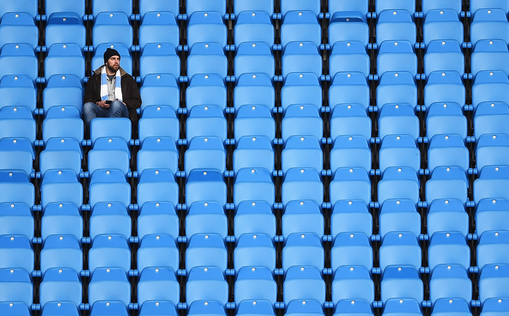

Корпоративная структура
Премьер-лига функционирует как корпорация, владельцами которой являются 20 клубов-участников. Каждый клуб является акционером с одним голосом по вопросам, связанным с изменением правил проведения турнира или спонсорскими контрактами. Для управления Премьер-лигой клубы избирают председателя, исполнительного директора и совет директоров. Футбольная ассоциация напрямую не вмешивается в повседневные операции Премьер-лиги, но, как особый акционер, имеет право вето в ходе выборов председателя и исполнительного директора Премьер-лиги, а также при голосовании по вопросу принятия новых правил турнира.
Премьер-лига посылает своих представителей в Европейский клубный форум УЕФА; конкретные представители от клубов и их количество определяется согласно таблице коэффициентов УЕФА. Европейский клубный форум УЕФА избирает трёх членов в Комитет клубных турниров УЕФА, который занимается вопросами функционирования таких турниров как Лига чемпионов УЕФА и Лига Европы УЕФА.
Формат проведения турнира
В настоящее время в Премьер-лиге выступает 20 клубов. По ходу сезона, который длится с августа по май, каждый клуб дважды встречается со всеми остальными клубами: один раз — на своём поле и один раз — на поле соперника. Таким образом, сезон Премьер-лиги для каждого клуба состоит из 38 матчей. За победу в матче команда получает три очка, за ничью — одно очко. В случае поражения команда не получает очков.
По завершении каждого сезона клуб, набравший больше всех очков, получает чемпионский титул. В случае равенства очков титул присуждается по разнице мячей, в случае равенства разницы мячей — по забитым голам. Если и после этого определить победителя не удаётся, команды занимают одну и ту же строчку турнирной таблицы. Если при этом требуется определить чемпиона или команду, которая покинет первенство, а также команду, которая квалифицируется в другие турниры, назначается дополнительный матч формата «плей-офф» на нейтральном поле. Три команды, набравшие наименьшее количество очков по итогам сезона, выбывают в Чемпионат Футбольной лиги, а оттуда, соответственно, в Премьер-лигу выходят три команды.
Четыре лучших команды по итогам каждого сезона квалифицируются для участия в Лиге чемпионов УЕФА. Команды, занявшие в чемпионате первое и второе места, попадают в групповую стадию турнира напрямую, а команды, завершившие сезон на третьем и четвёртом местах, начинают еврокубковую кампанию с третьего отборочного раунда Лиги чемпионов.
Начиная с сезона 2008/09 правила изменились: теперь три лучшие команды напрямую выходят в групповую стадию Лиги чемпионов, а команда, занявшая четвёртое место, участвует в третьем отборочном раунде Лиги чемпионов. Команда, занявшая пятое место, напрямую выходит в Лигу Европы УЕФА. В Лигу Европы могут также выйти клубы, финишировавшие на шестом и седьмом местах, в случае, если победители Кубка Англии и Кубка Футбольной лиги уже квалифицировались в Лигу чемпионов.
В 2005 году, когда «Ливерпуль», выигравший Лигу чемпионов, завершил чемпионат на пятом месте, не дающем право на квалификацию в Лигу чемпионов. УЕФА выдала «Ливерпулю» специальное разрешение на участие в розыгрыше Лиги чемпионов 2005/06, что увеличило число английских клубов в Лиге чемпионов УЕФА до 5.

После этого УЕФА обнародовала правило, согласно которому победитель Лиги чемпионов автоматически квалифицируется в следующий розыгрыш турнира независимо от позиции, которую он занял по итогам сезона в национальном чемпионате. Однако для ассоциаций, которые имеют четыре места в Лиге чемпионов, такая путёвка в турнир для клуба, занявшего место ниже четвёртого, означает исключение из участия в турнире клуба, занявшего четвёртое место.